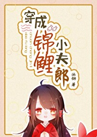

Jing Li reencarnó en tiempos antiguos, convirtiéndose en un raro pez koi con una habilidad especial que puede cambiar rápidamente la suerte de quienes lo rodean.
La pequeña carpa koi acabó en un remoto pueblo de montaña, donde fue recogida por la persona más enferma y famosa del pueblo.
El hombre enfermizo, llamado Qin Zhao, llegó al pueblo hace tres años sin recordar nada de su pasado, con su identidad envuelta en misterio. Tan enfermo que apenas podía moverse, fue marginado por los aldeanos.
Al ver la casa de barro vacía donde vivía Qin Zhao, Jing Li decidió ayudarlo.
La pequeña carpa koi le movió la cola a Qin Zhao: "¡He oído que puedo ayudar a la gente a cumplir sus deseos!"
Qin Zhao: "¿Algo?"
Pequeños koi: “¡Sí, sí, sí!”
Qin Zhao sonrió levemente: "Quiero un marido".
A partir de ese día, el hombre enfermo del pueblo se recuperó repentinamente y tuvo una suerte increíble.
Siempre que se adentraba en las montañas, encontraba hierbas raras; un acto casual de salvar a alguien resultó ser el hijo de un rico comerciante de la ciudad; incluso al cavar en la tierra, desenterró un lingote de plata…
Construyó una casa, se casó y fundó una escuela privada. La vida le iba cada vez mejor. Los aldeanos, movidos por la curiosidad, empezaron a trepar por los muros, intentando robarle el secreto de su buena suerte.
Solo vieron al hombre enfermizo en cuclillas junto al estanque, acariciando suavemente a las carpas koi de color rojo brillante que soplaban burbujas en el fondo:
“Sal y come, o no te dejaré comer pececitos.”
Koi suave y adorable (shou) x hombre enfermizo y hermoso (gong)
Esta es una historia tierna y acogedora ambientada en una granja, con mascotas, agricultura, cría de peces y romance. El protagonista posee habilidades extraordinarias y existe la posibilidad de que tenga hijos.